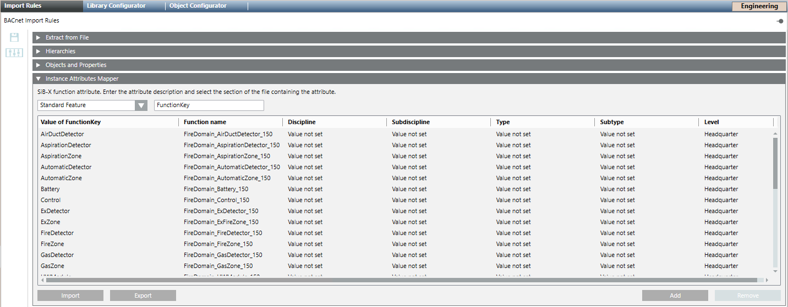

(Optional) Define Function Keys in the Import Rules
- Select Project > System Settings > Libraries > L1 Headquarter > BA > Device > BACnet > Import rules.
- In the Import Rules tab, click Customize
 .
. - Click OK.
- The selected Import Rules block is cloned. You can now modify the import rules as needed.
- In the Import Rules tab, open the Instance Attributes Mapper expander.
- Click Add.
- A new function key line is added.
- In the Standard Feature drop-down list box, enter the Reference column text field in the EDE file (for example, FunctionKey).
- Define the FunctionKey entries based on the following example:
- Value of FunctionKey: AutomaticDetector
- Function name: AutomaticDetector
- Discipline: Value not set
- Subdiscipline: Value not set
- Type: Value not set
- Subtype: Value not set
- Repeat steps 3 to 5 for each additional function key.

- Click Save
 .
. 
Data loss in the main project
The function keys are overwritten as part of the HQ software update.
It is recommended to back up the function keys configuration, since any software upgrade requires the function keys to be manually imported into the main project. See steps 10 and 11, below.
- To export the import rules for other projects and save them to another storage medium, do the following:
a. Click Export.
b. In the dialog box, select the destination folder, enter a name, and click Save. - After a software upgrade, import function keys into the main project manually, as follows:
a. Click Import.
b. Select the folder and file name, and click Open.